|
Items Found/Area Map(s)/None |
|
Diary Entry 24: Imperial Air Force Post Visit 2 In Pursuit of an Unstoppable Force In pursuit of the Empire, we found ourselves over their Imperial Air Force Post. The Empire had us right where they wanted us. We soon headed into wave after wave of battles. We fought many battleships, taking them all out one after the other. Inevitably we made our way to the Empires Flagship, the one that decimated Zoah. We managed to take heavy damage to the ship, only to have it completely repair and restore the damage we dealt to it. Before we knew it, we were engulfed within a massive cannon blast! The dragon's shield barely held up as we were flung around the sky. Soon after, Craymen's Fleet unexpectedly arrived, to do battle with the Imperial Flagship. Zastava flew before us, to greet us with a death threat. The dragon quickly shut him up, with an onslaught of Armageddon berserk blasts. After the battle, he told us that Craymen was waiting for us at the Tower, and that we should meet him there. He then proceeded to fly off, ultimately in the end, surrendering his life to the Empires Flagship. We headed back to camp and surprisingly, found a letter by Azel's still unconscious body. I wondered who it could be from? Closely examining the letter, I found Craymen's insignia. It was from Zastava and Craymen. The first part of the letter was scribbled by Zastava. He said his dying wish was for me to meet with Craymen at the Tower. He ended his thoughts by saying, "The two of you can save this world." The second half of the letter was written by Craymen. He thanked me for saving Azel twice. He ranted on about her being too complex for me to fully understand, and if I didn't return her, she would never regain consciousness. He ended his thoughts by saying, "Come to the Tower with Azel. The gateway will be open for you." After reading the letter, I headed for the Tower to meet my destiny. 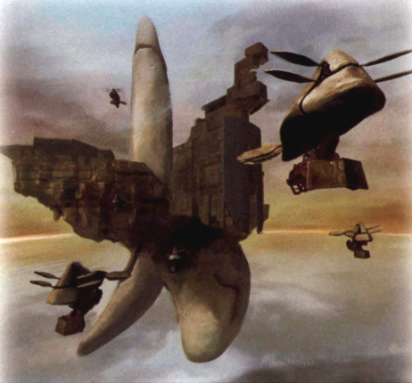 |
|
| Divine
Overview |
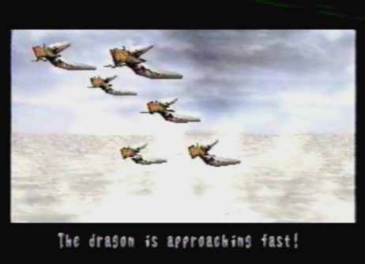 1. Above the Imperial Air Force Post, you will have to fight a sequence of battles. First, you will have to fight a wave of Stingers. |
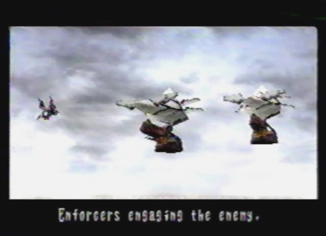 2. Second, you will have to fight a couple of Enforcers. |
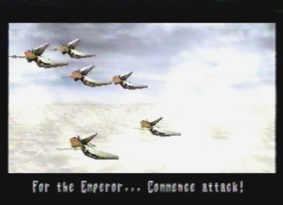 3. Third, you will be engaged by another wave of Stingers. |
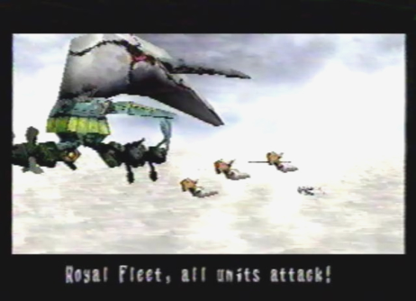 4. Fourth, you will have to face the Royal Fleet, consisting of one Imperial Punisher and a group of Stingers. |
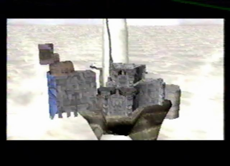 5. Now, you will have to do battle with the Boss: Imperial Flagship Grig Orig! |
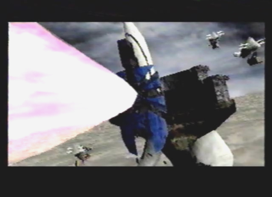 6. After the battle, Edge's dragon gets blasted by Grig Orig's insanely powerful cannon beam. |
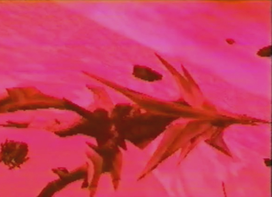 7. The dragon becomes engulfed within the cannon fire! |
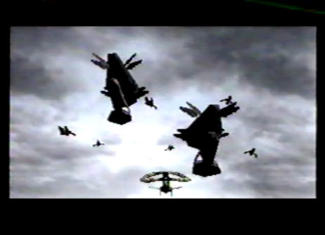 8. Soon after, Craymen's Black Fleet arrives to finish off Grig Orig. |
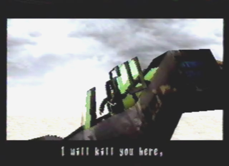 9. Zastava greets you with a death threat. It's time to shut him up! You will now face the sub-boss: Spectre. |
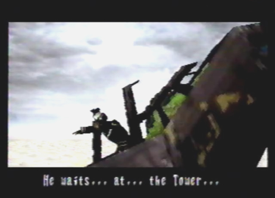 10. When Zastava is at your mercy, he will tell you to go meet Craymen at the Tower. |
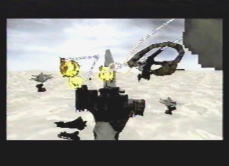 11. Zastava will then soar off into battle, ultimately having Grig Orig hand him his ass. |
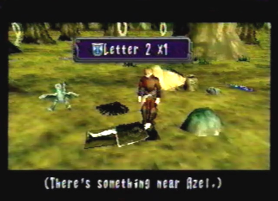 12. Return to camp and examine Azel. You will find Letter 2 X 1 next to her unconscious body. The letter is from Zastava and Craymen, telling you to go to the Tower. |
|
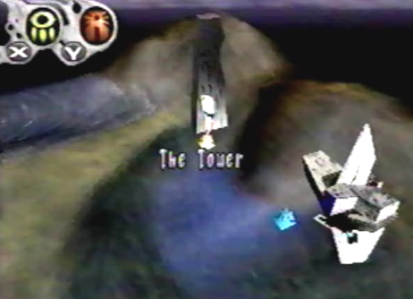 13. After having read Letter 2, head on over to the Tower. Many battles await there, make sure you are prepared. |